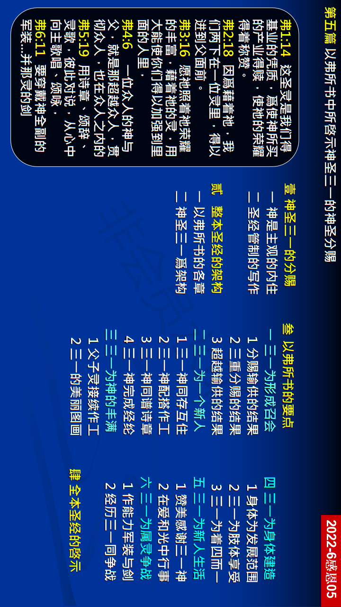

第五篇 以弗所书中所启示神圣三一的神圣分赐
前言
保罗所写的以弗所书，乃是一首美妙的交响 乐，一共有六个乐章。当我们说到『分赐』 时，还不光只是涌流，或是倾倒、浇灌的意 思，而是照着特别的计划，将许多的丰富分 授给人。神的分赐乃是照着祂的喜悦，将祂 自己作到人里面，使人的三部分被祂神圣的 生命与性情充满并浸透，而在各方面都与祂 一样，好使人在生命与性情上成为神，但不 在神格上。他们要在基督里被建造成为基督 的身体，使神得着团体的彰显。
真理要点(鸟瞰)
壹 神圣啓示的目的：①神对我们是主观②圣经管制的原则
贰 整本圣经的架构：①以弗所书的构成②神圣三一为架构
叁 以弗所书的要点：①产生基督的身体②产生主里的圣殿③产生神一切丰满 ④产生身体的建造⑤产生基督徒生活⑥带进属灵的争战
肆 圣经全部的啓示：神圣三一的分赐
经历应用(操练)
我们不应当醉酒，却要在灵里被充满。我们应当被神充满，甚至因神『酩酊大醉』，而不是被酒灌醉。我们愿意浸透在神的爱里，沐浴在神的爱里，被神的爱浸润并浸透，甚至因神的爱而醉了。召会应当是由一班沉醉于神的人组成的，他们是光的儿女，天天、时时、刻刻在爱里行事为人，这纔是正当的召会生活。我们如果藉着神的分赐因神而醉了，我们就会快乐、欢愉且欢腾。这样我们就会在日常生活里，真实享受在神圣三一里经过过程的神。
负担
召会就是一班与三一神联结并调和的人。三一神与召会 乃是四一。因着父、子 、灵都与基督的身体是一，我们 可以说三一神成了『四一神』，这四一就是父、子、灵与 身体。神圣三一的三者不可分，不可离，也不可乱，这 四一也是一样。 三一神与基督身体如此奥秘的联结并调 和，目的乃是为着分赐。那灵作基督身体的素质，不断 的将祂自己分赐到我们里面。同时，主也一直将祂的成 分分赐到我们里面。照样，当父超乎、遮护我们，贯乎、 关切我们，并住留在我们里面时， 祂就不断的将祂自己 分赐到我们里面。因此，召会乃是三一神分赐的结果。
